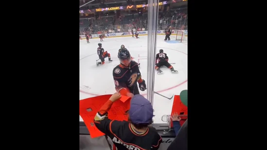

The video of a boy playing ‘rock, paper, scissors’ with a hockey player to win a puck was posted on Instagram.
The image shows the kid playing ‘rock, paper, scissors’ with a hockey player to win a puck.(Instagram/@goodnews_movement)
A boy is receiving lots of love on the Internet due to his kind gesture towards another kid. Shared on Instagram, the video shows how he passed on a puck to another kid after winning it from a hockey player after playing ‘rock, paper, scissor
The video is posted on the Instagram page Goodnews Movement. Alongside, they also shared a caption explaining the incident. “Paying it forward!!!: Boy immediately gives away the hockey puck he won playing Rock, Paper, Scissors against an NHL player,” they wrote.